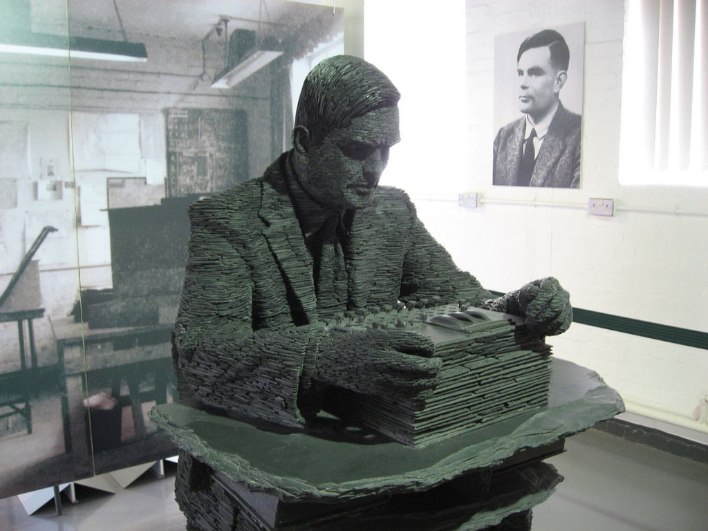
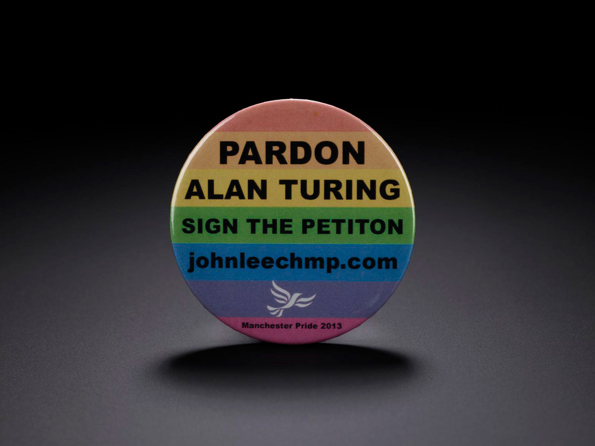

Alan Mathison Turing

Vem var Alan Mathison Turing?
Alan Mathison Turing var född den 23 Juni 1912 i Maida Vale, London. Redan som barn briljerade han i sina studier och när han började på universitet så skrev han nya, och gjorde om gamla skrifter. En sak som uppmärksammades var att han skrev om Gauss felfunktion. Senare i livet så hjälpte han till i andra världskriget, Alan Turing är skaparen av Bombe som anses vara en av de viktigare uppfinningarna som avgjorde kriget. Alan Turing dog senare av cyanid i sin lägenhet.
Barndom
Alan Turing föddes den 23 Juni 1921 i Maida Vale, London. Redan som ung så var Alan Turing ett geni. Han lärde sig själv att läsa genom att "knäcka den alfabetiska koden" och lista ur ord och meningar. Vid 14 års ålder skrevs han in på sin första skola, när han väl hade börjat skolan så var det många lärare som ogillade Turing då han inte studerade eller övade men kunde allting ändå. Det gjorde så att han senare han inte fick en examen.
Vad är Alan Turing känd för?
AI
Alan Turing är väldigt känd för sitt Turing test. Det är ett test som Alan Turing kom på för att avgöra intelligens nivån på en algoritm. Det går ut på att en kontroll person ska i blindo prata med en människa och en dator, om kontroll personen kan avgöra vilken av konversationerna som är en dator och vilken som är en person så har algoritmen inte klarat av Turing testet. Om kontroll personen inte kan avgöra vilken som är vilken så har algoritmen klarat av Turing testet.

Bombe
Under det andra världskriget vidarutvecklade Alan Turing på Bomba, det var Polens försök till att dekryptera Tysklands enigma-maskin. Alan Turing var den enda personen som tyckte att det var värt att testa sig på då de andra ansåg att det var för svårt. Efter två veckor så lyckades han skapa en prototyp som var bättre än Bomba. Mot slutet av kriget så uppmärksammades Bombe maskinen till Winston Churchill som direkt såg maskinens användning och gjorde sitt bästa försök till att producera Bombe i stor kvantitet. Bombe maskinen var avgörande i flera stora slag som Slaget om Atlanten.
ENIAC
En viktig sak som Alan Turing och Neumann har bidragit till är ENIAC datorn. ENIAC (Electronic Numerical Integrator and Computer) är den första elektroniska, digitala, programmerbara, general-purpose datorn som blev klar 1945. Alan Turing skapade programmeringsspråk till ENIAC tillsammans med personer som John Von Neumann. De skapade först "ENIAC Coding System" och sedan "ENIAC Short Code".
Tidig rekognition
Första skoldagen
När Alan Turing var 13 och började sin första skoldag så krockade det med 1926 General Strike. Alan var dock så inställd på att ta sig till skolan att han cyklade 97km ensam, från Southampton till Sherborne och stannade på ett vandrarhem för att sova där. Det blev lokala nyheter i tidningen.
Död
Den 7e Juni 1954 så dog Alan Turing. Han dog av förgiftning men det är osäkert hur han dog av förgiftning. Han hittades i sin säng med ett äpple bredvid på sängbordet. Det var först trott att han hade injicerat cyanid i äpplet och tagit en tugga. Det var troligt då han gillade filmen snövit och hans favoritscen från filmen var känt att vara när äpplet var förgiftat och det togs en tugga från det. Senare när de undersökte Alan Turings kropp så såg det mer ut som att han inhalerat cyanid och inte förtärt det. Då hittade man i lägenheten ett elektropläterings labb där cyanid användes. Det var då trott att han dog av det istället för äpplet.
Etik
Alan Turing var homosexuell under den tid där det inte var tillåtet att vara homosexuell. Det gjorde så att han behövde gömma det eller få konsekvenser. Till slut så upptäcktes det att Alan Turing var homosexuell, då ställdes han inför rätten. Han fick två val på vad som skulle hända med han, antingen behövde han ta kvinnliga hormoner eller sitta i fängelse. Han valde att ta kvinnliga hormoner.
Att Alan Turing var homosexuell och fick ett straff för det gjorde John Graham-Cumming besviken. Han tyckte att Alan Turing inte skulle ha ett brott vid sitt namn för att ha känslor. Han startade en röstning online för att förlåta Alan Turing för hans straff. Till slut så fick John Graham-Cumming tillräckligt många röster för att gå till det Britiska styret och fråga om en förlåtelse. Efter ett fram och tillbaka så lyckades han göra så att Alan Turing fick en officiell förlåtelse. I förlåtelsen så stod det att en hjälte till nationen förtjänar bättre än hur han hade blivit behandlad. Samtidigt som Alan Turing blek förlåten så blev flera under den tidsperioden förlåtna från sina "brott".
